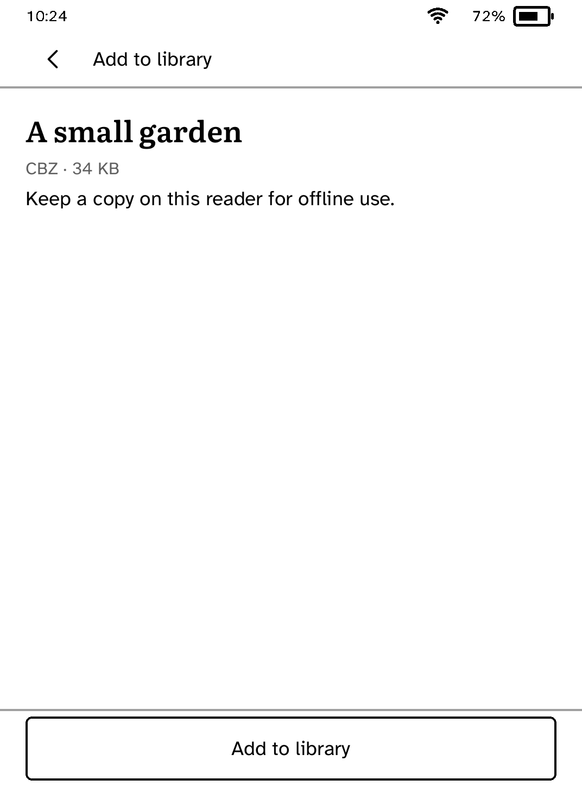
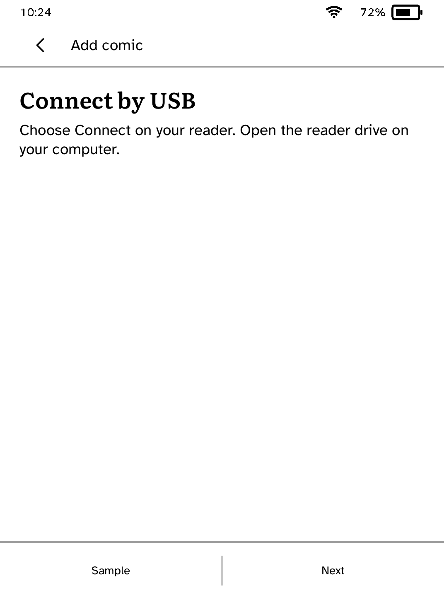
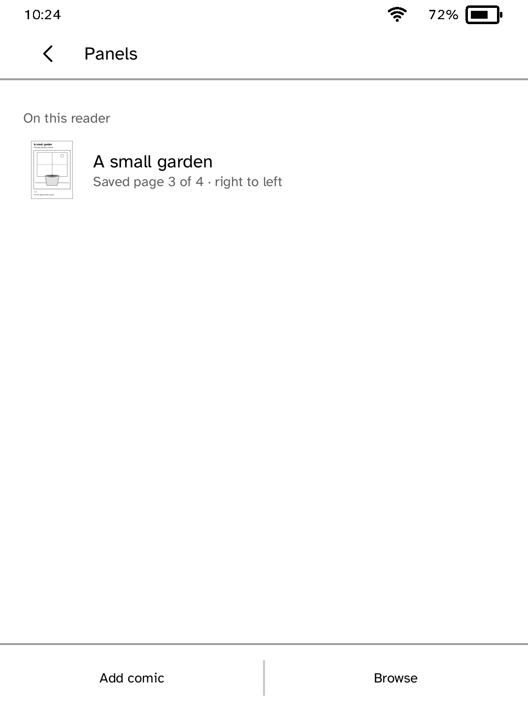
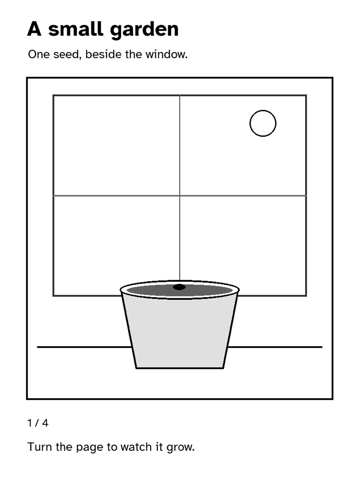

Panels
Read CBZ comics on your Kobo with zoom, spreads and right-to-left reading. Add comics over USB or download them from your Komga library.
- Version
- 0.1.12
- Needs
- Cobalt 0.3.34 or newer
- May use
- The network





Before you install
- Choose Try a sample comic to read offline. CBZ files up to 32 MB are supported; CBR and PDF are not.
- To send comics from your computer, set up the reader once over USB, if you have not already.
kobo setup - Send one or more comics. Each push adds to what you sent before, and Panels puts them on its shelf under their own titles the next time you open it.
kobo panels push ~/Comics/garden.cbz ~/Comics/harbour.cbz - To use Komga, choose Browse and enter your HTTPS server address. Add your username and password in Account details, then check the connection.
- Open Download on your shelf to retry a paused transfer. A completed download can be added to the shelf offline; saved comics remain available.
Commands need the kobo command on macOS, Linux or Windows WSL. This installs it ready-built, without touching the reader:
curl -fsSL https://bandarlabs.github.io/Cobalt/install.sh | sh -s -- --no-setup
New to Cobalt? Install it from your browser.
Plug your Kobo into this computer and install Cobalt in about a minute. After that, apps install over Wi-Fi.
Works in Chrome, Edge and Opera. Check your Kobo is supported.
Already have Cobalt? Link your Kobo.
On your Kobo, open App Store and tap Link a browser in the top bar, then Link a browser again. Scan the QR code, or enter the pairing code and verification key it shows.
Install on your Kobo
Your Kobo checks the app's signature before installing it.
New in 0.1.12
Move page and a rotated page's controls fit the panel, and reading options are switches. Check for comic says when no volume.cbz is there, the shelf shows a new reading direction at once, and Back from the copy guide returns to your comics.
Want another Kobo app? Request it, suggest a feature or report a bug in r/CobaltForKobo.